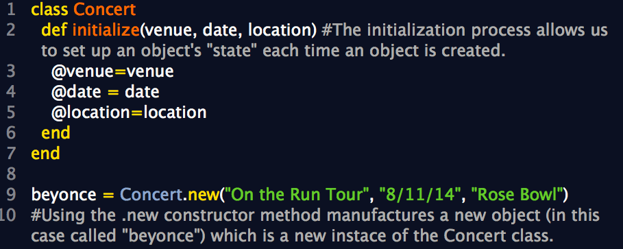

Technical Blog: Object-Oriented vs Functional Programming
September 10th, 2014
What’s the difference?
- Object Oriented Programming
- In a nutshell, object-oriented programming sees the world as data, modeled in code by "objects." In OOP, the programmer focuses on the content of that object and how that object behaves (i.e. methods). This is an extremely fundamental concept in Ruby as most things in Ruby are objects. In other words, Ruby is a pure object-oriented language and everything appears to Ruby as an object. Even classes, which we’ learned about recently, are objects themselves. The practical benefit is that it can vastly reduce the amount of code you have to write and the number of errors of inconsistency to debug. To talk in detail about object-oriented programming, we must talk about classes.
- Classes
- A class is used to specify the form of an object and it combines data representation and methods for manipulating that data into one neat package. The data and methods within a class are called members of the class. Here’s an example of a class called Car which demonstrates how instances of a class (known as objects) are created, which is precisely how object-oriented programming works. 
- Functional Programming
- Functional programming centers around one key idea: you do everything with functions. Functional languages are good when you have a fixed set of things, and as your code evolves, you primarily add new operations on existing things. This can be accomplished by adding new functions which compute with existing data types, and the existing functions are left alone. Instead of updating existing values, functional programs produce new values as functions of the old values. Examples of functional programming languages include: Scheme and Haskell.